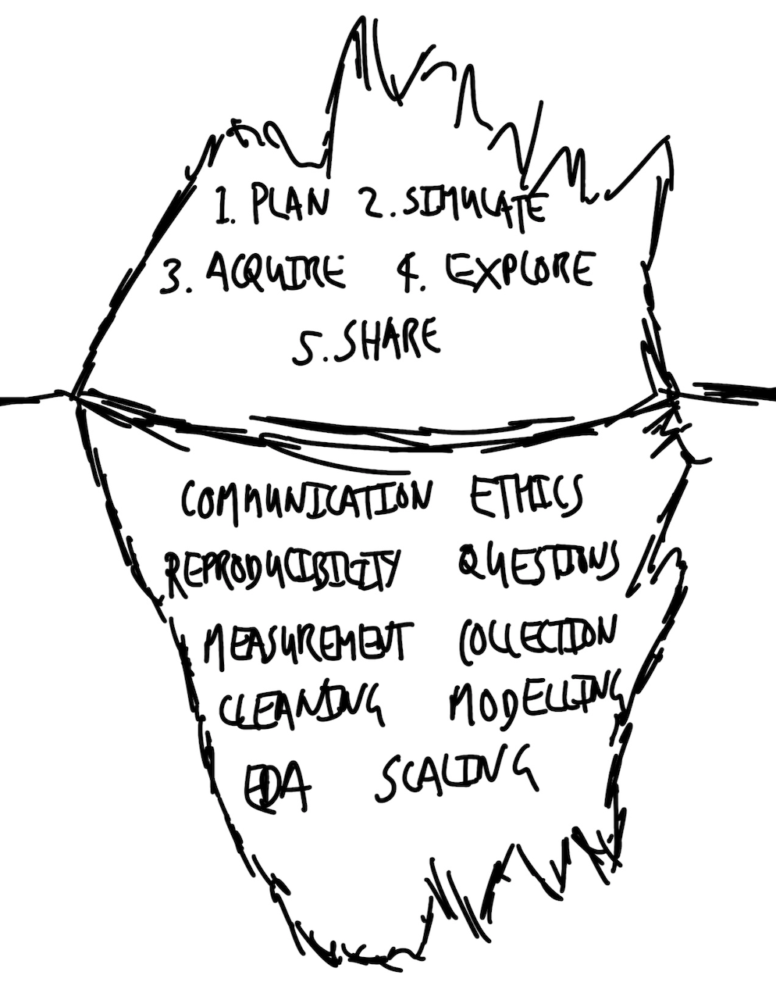

1 Telling stories with data
Prerequisites
- Read Counting the Countless, (Keyes 2019)
- This article discusses the difficulties of turning the world into data.
- Watch Data Science Ethics in 6 Minutes, (Register 2020)
- This video integrates ethics and data science in a constructive way.
- Read What is Code?, (Ford 2015)
- This article provides an overview of the role of code, and you should focus on the first three sections.
1.1 On telling stories
One of the first things that many parents regularly do when their children are born is read stories to them. In doing so they carry on a tradition that has occurred for millennia. Myths, fables, and fairy tales can be seen and heard all around us. Not only are they entertaining, but they enable us to learn about the world. While The Very Hungry Caterpillar by Eric Carle may seem quite far from the world of dealing with data, there are similarities. Both aim to tell a story and impart knowledge.
When using data we try to tell a convincing story. It may be as exciting as predicting elections, as banal as increasing internet advertising click rates, as serious as finding the cause of a disease, or as fun as forecasting basketball games. In any case the key elements are the same. The early twentieth century English author, E. M. Forster, described the aspects common to all novels as: story, people, plot, fantasy, prophecy, pattern, and rhythm (Forster 1927). Similarly, regardless of the setting, there are common concerns when we tell stories with data:
- What is the dataset? Who generated the dataset and why?
- What is the process that underpins the dataset? Given that process, what is missing from the dataset or has been poorly measured? Could other datasets have been generated, and if so, how different could they have been to the one that we have?
- What is the dataset trying to say, and how can we let it say this? What else could it say? How do we decide between these?
- What are we hoping others will see from this dataset, and how can we convince them of this? How much work must we do to convince them?
- Who is affected by the processes and outcomes, related to this dataset? To what extent are they represented in the dataset, and have they been involved in the analysis?
In the past, certain elements of telling stories with data were easier. For instance, experimental design has a long and robust tradition within agricultural and medical sciences, physics, and chemistry. Student’s t-distribution was identified in the early 1900s by a chemist, William Sealy Gosset, who worked at Guinness, a beer manufacturer (Boland 1984). It would have been relatively straightforward for him to randomly sample the beer and change one aspect at a time.
Many of the fundamentals of the statistical methods that we use today were developed in such settings. In those circumstances, it was typically possible to establish control groups and randomize, and there were fewer ethical concerns. A story told with the resulting data was likely to be fairly convincing.
Unfortunately, little of this applies these days, given the diversity of settings to which statistical methods are applied. On the other hand, we have many advantages. For instance, we have well-developed statistical techniques, easier access to large datasets, and open-source statistical languages such as R. But the difficulty of conducting traditional experiments means that we must also turn to other aspects to tell a convincing story.
1.2 Workflow components
There are five core components to the workflow needed to tell stories with data:
- Plan and sketch an endpoint.
- Simulate and consider that simulated data.
- Acquire and prepare the actual data.
- Explore and understand the actual data.
- Share what was done and what was found.
We begin by planning and sketching an endpoint because this ensures that we think carefully about where we want to go. It forces us to deeply consider our situation, acts to keep us focused and efficient, and helps reduce scope creep. In Alice’s Adventures in Wonderland by Lewis Carroll, Alice asks the Cheshire Cat which way she should go. The Cheshire Cat replies by asking where Alice would like to go. And when Alice replies that she does not mind, so long as she gets somewhere, the Cheshire Cat says then the direction does not matter because one will always get somewhere if one “walks long enough”. The issue, in our case, is that we typically cannot afford to walk aimlessly for long. While it may be that the endpoint needs to change, it is important that this is a deliberate, reasoned decision. And that is only possible given an initial objective. There is no need to spend too much time on this to get a lot of value from it. Often ten minutes with paper and pen are enough.
The next step is to simulate data, because that forces us into the details. It helps with cleaning and preparing the dataset because it focuses us on the classes in the dataset and the distribution of the values that we expect. For instance, if we were interested in the effect of age-groups on political preferences, then we may expect that our age-group variable would be a factor, with four possible values: “18-29”, “30-44”, “45-59”, “60+”. The process of simulation provides us with clear features that our real dataset should satisfy. We could use these features to define tests that would guide our data cleaning and preparation. For instance, we could check our real dataset for age-groups that are not one of those four values. When those tests pass, we could be confident that our age-group variable only contains values that we expect.
Simulating data is also important when we turn to statistical modeling. When we are at that stage, we are concerned with whether the model reflects what is in the dataset. The issue is that if we go straight to modeling the real dataset, then we do not know whether we have a problem with our model. We initially simulate data so that we precisely know the underlying data generation process. We then apply the model to the simulated dataset. If we get out what we put in, then we know that our model is performing appropriately, and can turn to the real dataset. Without that initial application to simulated data, it would be more difficult to have confidence in our model.
Simulation is often cheap—almost free given modern computing resources and statistical programming languages—and fast. It provides “an intimate feeling for the situation”, (Hamming [1997] 2020, 239). Start with a simulation that just contains the essentials, get that working, and then complicate it.
Acquiring and preparing the data that we are interested in is an often-overlooked stage of the workflow. This is surprising because it can be one of the most difficult stages and requires many decisions to be made. It is increasingly the subject of research, and it has been found that decisions made during this stage can affect statistical results (Huntington-Klein et al. 2021; Dolatsara et al. 2021).
At this stage of the workflow, it is common to feel a little overwhelmed. Typically, the data we can acquire leave us a little scared. There may be too little of it, in which case we worry about how we are going to be able to make our statistical machinery work. Alternatively, we may have the opposite problem and be worried about how we can even begin to deal with such a large amount of data.
Perhaps all the dragons in our lives are princesses who are only waiting to see us act, just once, with beauty and courage. Perhaps everything that frightens us is, in its deepest essence, something helpless that wants our love.
Rilke ([1929] 2014)
Developing comfort in this stage of the workflow unlocks the rest of it. The dataset that is needed to tell a convincing story is in there. But, like a sculptor, we need to iteratively remove everything that is not the data that we need, and to then shape that which is.
After we have a dataset, we then want to explore and understand certain relationships in that dataset. We typically begin the process with descriptive statistics and then move to statistical models. The use of statistical models to understand the implications of our data is not free of bias, nor are they “truth”; they do what we tell them to do. When telling stories with data, statistical models are tools and approaches that we use to explore our dataset, in the same way that we may use graphs and tables. They are not something that will provide us with a definitive result but will enable us to understand the dataset more clearly in a particular way.
By the time we get to this step in the workflow, to a large extent, the model will reflect the decisions that were made in earlier stages, especially acquisition and cleaning, as much as it reflects any type of underlying data generating process. Sophisticated modelers know that their statistical models are like the bit of the iceberg above the surface: they build on, and are only possible due to, the majority that is underneath, in this case, the data. But when an expert at the whole data science workflow uses modeling, they recognize that the results that are obtained are additionally due to choices about whose data matters, decisions about how to measure and record the data, and other aspects that reflect the world as it is, well before the data are available to their specific workflow.
Finally, we must share what we did and what we found, at as high a fidelity as is possible. Talking about knowledge that only you have does not make you knowledgeable, and that includes knowledge that only “past you” has. When communicating, we need to be clear about the decisions that we made, why we made them, our findings, and the weaknesses of our approach. We are aiming to uncover something important so we should write down everything in the first instance, although this written communication may be supplemented with other forms of communication later. There are so many decisions that we need to make in this workflow that we want to be sure that we are open about the entire thing—start to finish. This means much more than just the statistical modeling and creation of the graphs and tables, but everything. Without this, stories based on data lack credibility.
The world is not a rational meritocracy where everything is carefully and judiciously evaluated. Instead, we use shortcuts, hacks, and heuristics, based on our experience. Unclear communication will render even the best work moot, because it will not be thoroughly engaged with. While there is a minimum when it comes to communication, there is no upper limit to how impressive it can be. When it is the culmination of a thought-out workflow, it can even obtain a certain sprezzatura, or studied carelessness. Achieving such mastery requires years of work.
1.3 Telling stories with data
A compelling story based on data can likely be told in around ten-to-twenty pages. Anything less than this, and it is likely too light on some of the details. And while it is easy to write much more, often some reflection enables succinctness or for multiple stories to be separated.
It is possible to tell convincing stories even when it is not possible to conduct traditional experiments. These approaches do not rely on “big data”—which is not a cure-all (Meng 2018; Bradley et al. 2021)—but instead on better using the data that are available. Research and independent learning, a blend of theory and application, all combined with practical skills, a sophisticated workflow, and an appreciation for what one does not know, is often enough to create lasting knowledge.
The best stories based on data tend to be multi-disciplinary. They take from whatever field they need to, but almost always draw on statistics, computer science, economics, and engineering (to name a few). As such, an end-to-end workflow requires a blend of skills from these areas. The best way to learn these skills is to use real-world data to conduct research projects where you:
- develop research questions;
- obtain and clean relevant datasets;
- explore the data to answer those questions; and
- communicate in a meaningful way.
The key elements of telling convincing stories with data are:
- Communication.
- Reproducibility.
- Ethics.
- Questions.
- Measurement.
- Data collection.
- Data cleaning.
- Exploratory data analysis.
- Modeling.
- Scaling.
These elements can be considered within a few different categories including: doing good research (ethics and questions), coming up with credible answers (measurement, collection, cleaning, exploratory data analysis, and modeling), and creating compelling explanations (communication, reproducibility, and scaling). These elements are the foundation on which the workflow is built (Figure 1.1).

This is a lot to master, but communication is the most important. Simple analysis, communicated well, is more valuable than complicated analysis communicated poorly. This is because the latter cannot be understood or trusted by others. A lack of clear communication sometimes reflects a failure by the researcher to understand what is going on, or even what they are doing. And so, while the level of the analysis should match the dataset, instrumentation, task, and skillset, when a trade-off is required between clarity and complication, it can be sensible to err on the side of clarity.
Clear communication means writing in plain language with the help of tables, graphs, and models, in a way that brings the audience along with you. It means setting out what was done and why, as well as what was found. The minimum standard is that this is done to an extent such that another person can independently do what you did and find what you found. One challenge is that as you immerse yourself in the data, it can be difficult to remember what it was like when you first came to it. But that is where most of your audience will be coming from. Learning to provide an appropriate level of nuance and detail can be challenging, but is made easier by focusing on writing for the benefit of the audience.
Reproducibility is required to create lasting knowledge about the world. It means that everything that was done—all of it, end-to-end—can be independently redone. Ideally, autonomous end-to-end reproducibility is possible; anyone can get the code, data, and environment to verify everything that was done (Heil et al. 2021). Unrestricted access to code is almost always possible. While that is the default expectation for data also, it is not always reasonable. For instance, studies in psychology may have small, personally identifying samples. One way forward is to openly share simulated data with similar properties, along with defining a process by which the real data could be accessed, given appropriate bona fides. Statistical models are commonly subject to an extensive suite of manual checks. Another aspect of reproducibility is that we similarly need to include a broad swathe of automated testing.
Active consideration of ethics is needed because the dataset likely concerns humans. This means considering things like: who is in the dataset, who is missing, and why? To what extent will our story perpetuate the past? And is this something that ought to happen? Even if the dataset does not concern humans, the story is likely being put together by humans, and we affect almost everything else. This means that we have a responsibility to use data ethically, with concern for environmental impact and inequity.
There are many definitions of ethics, but when it comes to telling stories with data, at a minimum it means considering the full context of the dataset (D’Ignazio and Klein 2020). In jurisprudence, a textual approach to law means literally considering the words of the law as they are printed, while a purposive approach means laws are interpreted within a broader context. An ethical approach to telling stories with data means adopting the latter approach, and considering the social, cultural, historical, and political forces that shape our world, and hence our data (Crawford 2021).
Curiosity provides internal motivation to explore a dataset, and associated process, to a proper extent. Questions tend to beget questions, and these usually improve and refine as the process of coming to understand a dataset carries on. In contrast to the stock Popperian approach of hypothesis testing often taught, questions are typically developed through a continuous and evolving process (Franklin 2005). Finding an initial question can be challenging. It is especially tough to operationalize research questions into measurable variables that are reasonably available. Selecting an area of interest can help, as can sketching a broad claim with the intent of evolving it into a specific question, and finally, bringing together two different areas.
Developing a comfort and ease in the messiness of real-world data means getting to ask new questions each time the data update. And knowing a dataset in detail tends to surface unexpected groupings or values that you can then work with subject-area experts to understand. Becoming a bit of a “hybrid” by developing a base of knowledge across a variety of areas is especially valuable, as is becoming comfortable with the possibility of initially asking dumb questions.
Measurement and data collection are about deciding how our world will become data. They are challenging. The world is so vibrant that it is difficult to reduce it to something that is possible to consistently measure and collect. Take, for instance, someone’s height. We can, probably, all agree that we should take our shoes off before we measure height. But our height changes over the course of the day. And measuring someone’s height with a tape measure will give different results to using a laser. If we are comparing heights between people or over time, it therefore becomes important to measure at the same time each day, using the same method. But that quickly becomes unfeasible.
Most of the questions we are interested in will use data that are more complicated than height. How do we measure how sad someone is? How do we measure pain? Who decides what we will measure and how we will measure it? There is a certain arrogance required to think that we can reduce the world to a value and then compare these. Ultimately, we must, but it is difficult to consistently define what is to be measured. This process is not value-free. The only way to reasonably come to terms with this brutal reduction is to deeply understand and respect what we are measuring and collecting. What is the central essence, and what can be stripped away?
Pablo Picasso, the twentieth century Spanish painter, has a series of drawings where he depicts the outline of an animal using only one line (Figure 1.2). Despite their simplicity, we recognize which animal is being depicted—the drawing is sufficient to tell the animal is a dog, not a cat. Could this be used to determine whether the dog is sick? Probably not. We would likely want a different depiction. The decision as to which things should be measured, and then of those things that we decide to consider, which features should be measured and collected, and which to ignore, turns on context and purpose.
Data cleaning and preparation is a critical part of using data. We need to massage the data available to us into a dataset that we can use. This requires making a lot of decisions. The data cleaning and preparation stage is critical, and worthy of as much attention and care as any other.
Following Kennedy et al. (2022) consider a survey that collected information about a potentially sensitive topic, gender, using four options: “man”, “woman”, “prefer not to say”, and “other”, where “other” dissolved into an open textbox. When we come to that dataset, we are likely to find that most responses are either “man” or “woman”. We need to decide what to do about “prefer not to say”. If we drop it from our dataset, then we are actively ignoring these respondents. If we do not drop it, then it makes our analysis more complicated. Similarly, we need to decide how to deal with the open text responses. Again, we could drop these responses, but this ignores the experiences of some of our respondents. Another option is to merge this with “prefer not to say”, but that shows a disregard for our respondents, because they specifically did not choose that option.
There is no easy, nor always-correct, choice in many data cleaning and preparation situations. It depends on context and purpose. Data cleaning and preparation involves making many choices like this, and it is vital to record every step so that others can understand what was done and why. Data never speak for themselves; they are the puppets of the ventriloquists that cleaned and prepared them.
The process of coming to understand the look and feel of a dataset is termed exploratory data analysis (EDA). This is an open-ended process. We need to understand the shape of our dataset before we can formally model it. The process of EDA is an iterative one that involves producing summary statistics, graphs, tables, and sometimes even some modeling. It is a process that never formally finishes and requires a variety of skills.
It is difficult to delineate where EDA ends and formal statistical modeling begins, especially when considering how beliefs and understanding develop (Hullman and Gelman 2021). But at its core, it starts with the data, and involves immersing ourselves in it (Cook, Reid, and Tanaka 2021). EDA is not typically explicitly included in our final story. But it has a central role in how we come to understand the story we are telling. It is critical that all the steps taken during EDA are recorded and shared.
Statistical modeling has a long and robust history. Our knowledge of statistics has been built over hundreds of years. Statistics is not a series of dry theorems and proofs but is instead a way of exploring the world. It is analogous to “a knowledge of foreign languages or of algebra: it may prove of use at any time under any circumstances” (Bowley 1901, 4). A statistical model is not a recipe to be naively followed in an if-this-then-that way but is instead a way of understanding data (James et al. [2013] 2021). Modeling is usually required to infer statistical patterns from data. More formally, statistical inference is “the process of using data to infer the distribution that generated the data” (Wasserman 2005, 87).
Statistical significance is not the same as scientific significance, and we are realizing the cost of what has been the dominant paradigm. Using an arbitrary pass/fail statistical test on our data is rarely appropriate. Instead, the proper use for statistical modeling is as a kind of echolocation. We listen to what comes back to us from the model, to help learn about the shape of the world, while recognizing that it is only one representation of the world.
The use of statistical programming languages, such as R, enables us to rapidly scale our work. This refers to both inputs and outputs. It is basically just as easy to consider ten observations as 1,000, or even 1,000,000. This enables us to more quickly see the extent to which our stories apply. It is also the case that our outputs can be consumed as easily by one person as by ten, or 100. Using an Application Programming Interface (API) it is even possible for our stories to be considered many thousands of times each second.
1.4 How do our worlds become data?
There is the famous story by Eddington about some people who went fishing in the sea with a net. Upon examining the size of the fish they had caught, they decided there was a minimum size to the fish in the sea! Their conclusion arose from the tool used and not from reality.
Hamming ([1997] 2020, 177)
To a certain extent we are wasting our time. We have a perfect model of the world—it is the world! But it is too complicated. If we knew perfectly how everything was affected by the uncountable factors that influence it, then we could forecast perfectly a coin toss, a dice roll, and every other seemingly random process each time. But we cannot. Instead, we must simplify things to that which is plausibly measurable, and it is that which we define as data. Our data are a simplification of the messy, complex world from which they were derived.
There are different approximations of “plausibly measurable”. Hence, datasets are always the result of choices. We must decide whether they are nonetheless reasonable for the task at hand. We use statistical models to help us think deeply about, explore, and hopefully come to better understand, our data.
Much of statistics is focused on considering, thoroughly, the data that we have. That was appropriate for when our data were agricultural, astronomical, or from the physical sciences. This is not to say that systemic bias cannot exist or have an impact in non-human contexts, but with the rise of data science, partly because of the value of its application to datasets generated by humans, we must also actively consider what is not in our dataset. Who is systematically missing from our dataset? Whose data do not fit nicely into the approach that we are using and are hence being inappropriately simplified? If the process of the world becoming data requires abstraction and simplification, then we need to be clear about when we can reasonably simplify and when it would be inappropriate.
The process of our world becoming data necessarily involves measurement. Paradoxically, often those that do the measurement and are deeply immersed in the details have less trust in the data than those who are removed from it. Even seemingly clear tasks, such as measuring distance, defining boundaries, and counting populations, are surprisingly difficult in practice. Turning our world into data requires many decisions and imposes much error. Among many other considerations, we need to decide what will be measured, how accurately we will do this, and who will be doing the measurement.
An important example of how something seemingly simple quickly becomes difficult is maternal-related deaths. That refers to the number of women who die while pregnant, or soon after a termination, from a cause related to the pregnancy or its management (World Health Organization 2019). It is difficult but critical to turn the tragedy of such a death into cause-specific data because that helps mitigate future deaths. Some countries have well-developed civil registration and vital statistics (CRVS), which collect data about every death. But many countries lack a CRVS, resulting in unrecorded deaths. Even if a death is recorded, defining a cause of death may be difficult, especially when there is a lack of qualified medical personal or equipment. Maternal deaths are particularly difficult because there are typically many causes. Some CRVS systems have a checkbox on the death registration form to specify whether the death should be counted as maternal. But even some developed countries have only recently adopted this. For instance, it was only introduced in the United States in 2003, and even in 2015 Alabama, California, and West Virginia had not adopted the standard question (MacDorman and Declercq 2018). This means there is a risk that maternal deaths are under-reported or misclassified.
We typically use various instruments to turn the world into data. In astronomy, the development of better telescopes, and eventually satellites and probes, enabled new understanding of other worlds. Similarly, we have new instruments for turning our own world into data being developed each day. Where once a census was a generation-defining event, now we have regular surveys, transaction data available by the second, and almost all interactions on the internet become data of some kind. The development of such instruments has enabled exciting new stories.
Our world imperfectly becomes data. If we are to use data nonetheless to learn about the world, then we need to actively seek to understand their imperfections and the implications of those imperfections.
1.5 What is data science and how should we use it to learn about the world?
There is no agreed definition of data science. Wickham, Çetinkaya-Rundel, and Grolemund ([2016] 2023) say it “…allows you to turn raw data into understanding, insight, and knowledge”. Similarly, Leek and Peng (2020) contend that it is “\(\dots\)the process of formulating a quantitative question that can be answered with data, collecting and cleaning the data, analyzing the data, and communicating the answer to the question to a relevant audience”. Baumer, Kaplan, and Horton (2021) consider it a “\(\dots\)science of extracting meaningful information from data”. And Timbers, Campbell, and Lee (2022) define it as “the process of generating insight from data through reproducible and auditable processes”. From an earlier age Foster (1968) points clearly to what we now call data science when he says: “(s)tatistics are concerned with the processing and analysis of masses of data and with the development of mathematical methods of extracting information from data. Combine all this activity with computer methods and you have something more than the sum of its parts.”
Craiu (2019) argues that the lack of certainty as to what data science is might not matter because “\(\dots\)who can really say what makes someone a poet or a scientist?” He goes on to broadly say that a data scientist is “\(\dots\)someone with a data driven research agenda, who adheres to or aspires to using a principled implementation of statistical methods and uses efficient computation skills.”
In any case, alongside specific, technical definitions, there is value in having a simple definition, even if we lose a bit of specificity. Probability is often informally defined as “counting things” (McElreath [2015] 2020, 10). In a similar informal sense, data science can be defined as something like: humans measuring things, typically related to other humans, and using sophisticated averaging to explain and predict. We revisit this in Chapter 17 to provide a more detailed definition.
That may sound a touch cute, but Francis Edgeworth, the nineteenth century statistician and economist, considered statistics to be the science “of those Means which are presented by social phenomena”, so it finds itself in good company (Edgeworth 1885). In any case, one feature of this definition is that it does not treat data as terra nullius, or nobody’s land. Statisticians tend to see data as the result of some process that we can never know, but that we try to use data to come to understand. Many statisticians care deeply about data and measurement, yet there are many cases in statistics where data kind of just appear; they belong to nobody. But that is never actually the case.
Data are generated, and then must be gathered, cleaned, and prepared, and these decisions matter. Every dataset is sui generis, or a class by itself, and so when you come to know one dataset well, you just know one dataset, not all datasets.
Much of data science focuses on the “science”, but it is important to also focus on the “data”. And that is another characteristic of that cutesy definition of data science. A lot of data scientists are generalists, who are interested in a broad range of problems. Often, the thing that unites these is the need to gather, clean, and prepare messy data. And frequently it is the specifics of those data that require the most time, that update most often, and that are worthy of our most full attention.
Jordan (2019) describes being in a medical office and being given some probability, based on prenatal initial screening, that his child, then a fetus, had Down syndrome. By way of background, one can do a test to know for sure, but that test comes with the risk of the fetus not surviving, so this initial screening is done and then parents typically use the probability of Down syndrome from that initial screening to decide whether to do the conclusive test. Jordan (2019) found the probabilities provided by the initial screening were being determined based on a study done a decade earlier in the United Kingdom. The issue was that in the ensuing ten years, imaging technology had improved so the initial screening was not expecting such high-resolution images, and there had been a subsequent (false) increase in Down syndrome diagnoses from the initial screening. The data were the problem.
Dr Michael Jordan is the Pehong Chen Distinguished Professor at the University of California, Berkeley. After earning a PhD in Cognitive Science from University of California, San Diego, in 1985, he was appointed as an assistant professor at MIT, being promoted to full professor in 1997, and in 1998 he moved to Berkeley. One area of his research is statistical machine learning. For instance, one particularly important paper is Blei, Ng, and Jordan (2003), which defined how text could be grouped together to define topics, and we cover this in Chapter 16.
It is not just the “science” bit that is hard, it is the “data” bit as well. For instance, researchers went back and examined one of the most popular text datasets in computer science, and they found that around 30 per cent of the data were improperly duplicated (Bandy and Vincent 2021). There is an entire field—linguistics—that specializes in these types of datasets, and inappropriate use of data is one of the dangers of any one field being hegemonic. The strength of data science is that it brings together people with a variety of backgrounds and training to the task of learning about some dataset. It is not constrained by what was done in the past. This means that we must go out of our way to show respect for those who do not come from our own tradition, but who are as interested in a dataset as we are. Data science is multi-disciplinary and increasingly critical; hence it must reflect our world. There is a need for a diversity of backgrounds, of approaches, and of disciplines in data science.
Our world is messy, and so are our data. To successfully tell stories with data you need to become comfortable with the fact that the process will be difficult. Hannah Fry, the British mathematician, describes spending six months rewriting code before it solved her problem (Thornhill 2021). You need to learn to stick with it. You also need to accept failure at times, and you do this by developing resilience and having intrinsic motivation. The world of data is about considering possibilities and probabilities, and learning to make trade-offs between them. There is hardly anything that we know for certain, and there is no perfect analysis.
Ultimately, we are all just telling stories with data, but these stories are increasingly among the most important in the world.
1.6 Exercises
Questions
- According to Register (2020) data decisions impact (pick one)?
- Real people.
- No one.
- Those in the training set.
- Those in the test set.
- What is data science (in your own words)?
- According to Keyes (2019) what is data science (pick one)?
- The inhumane reduction of humanity down to what can be counted.
- The quantitative analysis of large amounts of data for the purpose of decision-making.
- Data science is an interdisciplinary field that uses scientific methods, processes, algorithms, and systems to extract knowledge and insights from many structured and unstructured data.
- Imagine that you have a job in which including race and/or sexuality as predictors improves the performance of your model. When deciding whether to include these in your analysis, what factors would you consider (in your own words)?
- According to Crawford (2021), as described in this chapter, which of the following forces shape our world, and hence our data (select all that apply)?
- Political.
- Historical.
- Cultural.
- Social.
- Why is ethics a key element of telling convincing stories (in your own words)?
- Consider the results of a survey that asked about gender. It finds the following counts: “man: 879”, “woman: 912”, “non-binary: 10” “prefer not to say: 3”, and “other: 1”. What is the appropriate way to consider “prefer not to say” (pick one)?
- Drop them.
- Merge it into “other”.
- Include them.
- It depends.
Tutorial
The purpose of this tutorial is to clarify in your mind the difficulty of measurement, even of seemingly simple things, and hence the likelihood of measurement issues in more complicated areas.
Please obtain some seeds for a fast-growing plant such as radishes, mustard greens, or arugula. Plant the seeds and measure how much soil you used. Water them and measure the water you used. Each day take a note of any changes. More generally, measure and record as much as you can. Note your thoughts about the difficulty of measurement. Eventually your seeds will sprout, and you should measure how they grow. We will return to use the data that you gathered.